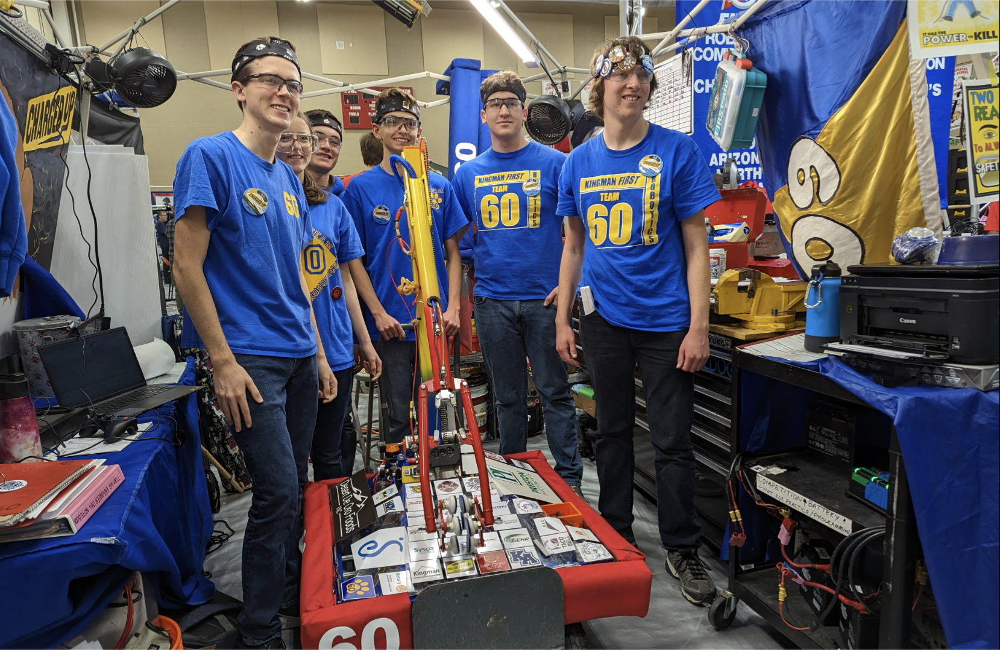

Team 60
We have started our 2024 season! Come see our new game!

Team 60 is a community FIRST Robotics Competition team based out of Kingman, Arizona.
Founded in 1996, Team 60 robotics has celebrated their 25th season in 2022.
Team members are from several schools throughout the Kingman area, as well as homeschooled students, and are
attending 7-12th grade. Some of our current members are from Kingman High School, Lee Williams High School, Kingman Academy of Learning
High School, White Cliffs Middle School, and Kingman Middle School. We welcome any students between 7-12th grades who have an interest
in robotics and are interested in learning new skills.
Every year, we receive a new challenge in January and have about 6-8 weeks to design, engineer,
prototype, build, program, and test a new robot before our first regional event in early-mid March.
The tasks and challenges the robot must complete are different every year, requiring students to
design for tasks they have not encountered before.
Our program runs year round. Even after competitions are over, we continue to meet at
our shop. We typically have many projects going and host classes for members to learn
about different robotics concepts. Some of the classes we host are
programming, soldering, electrical, machining, mechanical concepts, photography, 3D printing
AutoCAD and design, and more.
It's more than just robots
FIRST is a program that encourages every student to learn new skills,
have fun, and give back to their communities.
Throughout the year, we also participate in many community outreach and community service events.
We believe in giving back to our communities and participate in events such as: toy drives for
the local hospital, library book sales,
We also believe in introducing students to STEM (Science, Technology, Engineering, and Math)
and local robotics programs. We often give presentations for schools and community organizations
that include robot demonstrations and fun activities for kids. In addition we also give presentations
for local businesses and sponsors.
It's not all about the robots.
As FIRST says, "FIRST is the one sport where everyone can go pro."
Students learn skills that are useful throughout their whole lives and careers.
Whether it's teamwork or skills in business, presentations, mechanical, electrical,
machining, programming, or another area, all students can take away something from
this program that can help them in their lives. Several of our students have discovered
the field they would like to have a career in from participating in Team 60.
Students can learn many concepts that can give a head start in college,
or open the doors for internships and employment right out of high school.
There are many scholarships offered at universities across the country for students who graduate from
FIRST programs.
We always emphasize that no experience is required to get involved with FIRST or robotics.
All you need is a desire to learn something new.